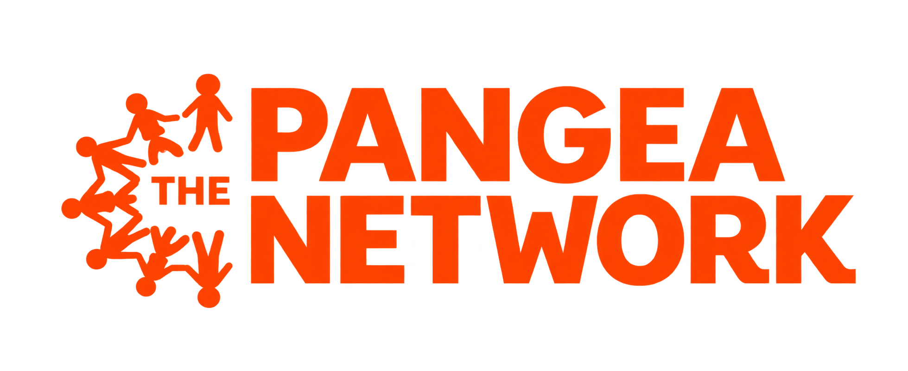

DICE partners with local organizations to help students apply their skills through meaningful, real-world work.

The Pangea Network
The Pangea Network is an international non-profit organization focused on empowering women and youth through education, skills training, and mentorship.
Headquartered at 8505 Technology Forest Pl #1104, The Woodlands, TX 77381, the organization runs parallel community-led development initiatives in both the United States and Kenya.
Key Program Pillars
- Young Women's Leadership Challenge: A comprehensive development program preparing United States high school girls for global citizenship, personal leadership, and social entrepreneurship.
- Kenyan Women's Network: A financial independence initiative providing business education, micro-loans, and cooperative savings programs to rural Kenyan women.
- Student Sponsorships: Financial aid programs ensuring vulnerable children in Kenya receive tuition, school supplies, uniform funding, and emotional support.
- Adolescent Health Initiatives: Targeted community health workshops addressing reproductive health, sanitation, and hygiene for youth in rural regions.
Kailee Mills Foundation
The Kailee Mills Foundation is a nonprofit organization dedicated to saving lives by increasing seat belt use through education, awareness, and community involvement. Founded in memory of Kailee Mills, the organization works to prevent injuries and fatalities caused by unrestrained driving while also supporting families affected by vehicle-related tragedies.
Headquartered at 25003 Pitkin Road, Suite C100, Spring, TX 77386, the foundation serves communities through safety education, family assistance, scholarships, and support for first responders.
Key Program Pillars
- Seat Belt Safety Awareness: Educational campaigns, school presentations, community events, and outreach initiatives that encourage drivers and passengers to buckle up every trip.
- Family Assistance: Financial and counseling support for families affected by serious or fatal vehicle crashes.
- College Scholarships: Scholarships supporting students pursuing higher education while encouraging youth leadership and responsibility.
- First Responder Support: Programs designed to recognize and assist first responders who serve families and communities during emergencies.
The Woodlands Arts Council
The Woodlands Arts Council (TWAC) is a nonprofit organization dedicated to enriching the community through cultural and educational programs that encourage, support, and promote the visual, performing, and literary arts.
Located at 9450 Grogan's Mill Road, Suite 160, The Woodlands, TX 77380, TWAC serves The Woodlands and the greater Montgomery County area through arts education, scholarships, public art, grants, exhibitions, and major community events.
Key Program Pillars
- Student Art Scholarships: Financial support for graduating students who demonstrate artistic talent and plan to continue their education.
- Arts Microgrants: Funding for artistic and educational projects throughout The Woodlands and Montgomery County.
- Public Art Programs: Community installations such as art benches, bike racks, murals, and other projects that expand access to art in public spaces.
- Youth & Community Arts Programs: Initiatives such as the Young Makers Market, Student Art Ambassador Program, Senior Art Program, and educational outreach opportunities that encourage creativity across multiple age groups.
Pets With A Mission (PWAM)
Pets With A Mission, Inc. (PWAM) is an all-volunteer nonprofit organization focused on enhancing quality of life through the human-animal bond. Its trained handler-and-dog teams provide animal-assisted activities in schools, libraries, hospitals, senior-care facilities, and community events.
Based in The Woodlands area of Texas, PWAM provides its services without charge and relies on trained volunteer teams and community support to carry out its mission.
Key Program Pillars
- R.E.A.D.® Child Literacy Program: Therapy teams work with developing and at-risk readers, creating a relaxed environment that helps students build reading skills, confidence, and enthusiasm for literacy.
- Hospital Visits: Therapy dogs interact with hospital patients and staff to provide comfort, companionship, and stress relief.
- Senior Care Visits: PWAM teams visit senior living and memory-care facilities to encourage conversation, social connection, and emotional well-being.
- Community & Special Events: Volunteer teams participate in school programs, charity events, exam-stress programs, fundraisers, and other community activities.
Keep US Fed Montgomery County
Keep US Fed Montgomery County is a nonprofit food-rescue organization working to alleviate hunger while reducing food waste. The organization collects nutritious surplus food that would otherwise be discarded and redistributes it to nonprofit organizations serving people experiencing food insecurity throughout Montgomery County.
Founded from a Leadership Montgomery County Class of 2015 service project, Keep US Fed has grown into a volunteer-supported food recovery network connecting businesses with shelters, food pantries, and other community organizations.
Key Program Pillars
- Food Rescue & Recovery: Volunteers collect excess food from grocery stores, restaurants, caterers, hotels, distributors, and other food businesses before it becomes waste.
- Community Food Distribution: Recovered food is delivered at no cost to shelters, food pantries, and nonprofit organizations serving individuals and families experiencing food insecurity.
- Food-Waste Reduction: Edible food is redirected away from landfills, addressing both hunger and the environmental effects associated with food waste.
- Volunteer-Led Food Runs: Community volunteers conduct pickups and deliveries throughout Montgomery County so surplus food can quickly reach organizations that need it.
Run for Jeev Foundation
The Run for Jeev Foundation is a community nonprofit focused on mental health awareness and suicide prevention among teens and young adults. Through fundraising, education, community events, scholarships, and partnerships, the organization works to create environments where young people feel comfortable discussing mental health and seeking support.
Centered in The Woodlands community, the foundation brings together students, families, mental-health advocates, and volunteers to promote open conversations about mental well-being and support suicide-prevention initiatives.
Key Program Pillars
- Annual Run for Jeev 5K: A community race that raises funds and awareness for mental health and suicide prevention.
- Mental Health Education & Workshops: Programs addressing topics such as youth mental wellness, healthy relationships, social media, creativity, family communication, and suicide prevention.
- Senior Mental Health Scholarships: Annual scholarships recognizing high-school seniors who demonstrate meaningful commitment to improving mental-health awareness in their communities.
- Community Partnerships & Support: Funding and partnerships that strengthen mental-health nonprofits and initiatives and improve access to mental-health and recovery resources.